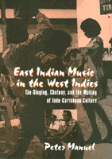

An introduction to the music of Indo-Caribbean culture
An introduction to the music of Indo-Caribbean culture


 An introduction to the music of Indo-Caribbean culture
An introduction to the music of Indo-Caribbean culture

|  |
East Indian Music in the West IndiesT�n-Singing, Chutney, and the Making of Indo-Caribbean CultureIncludes CDPeter Manuelpaper EAN: 978-1-56639-763-6 (ISBN: 1-56639-763-4) |
Gordon K. Lewis Award from the Caribbean Studies Association, 2000
"This is excellent musical, cultural and political analysis. It charts the fascinating re-configuration of Indian practices and terms that is 't�n-singing' and articulates the complex significance of the licentious 'chutney' in a fast-changing, multi-cultural society in which the Indian contingent is on the rise, and women want liberation. It is indeed a worthy book."
—Dr. Edward O. Henry, Professor of Anthropology, San Diego State University, and author of Chant the Names of God: Music and Culture in Bhojpuri-Speaking India
Trinidadian sitarist, composer, and music authority, Mangal Patasar once remarked about tãn-singing, "You take a capsule from India, leave it here for a hundred years, and this is what you get." Patasar was referring to what may be the most sophisticated and distinctive art form cultivated among the one and a half million East Indians whose ancestors migrated as indentured laborers from colonial India to the West Indies between 1845 and 1917. Known in Trinidad and Guyana as "tãn-singing" or "local-classical music" and in Suriname as "baithak gãna" ("sitting music"), tãn-singing has evolved into a unique idiom, embodying the rich poetic and musical heritage brought from India as modified by a diaspora group largely cut off from its ancestral homeland.
In recent decades, however, tãn-singing has been declining, regarded as quaint and crude by younger generations raised on MTV, Hindi film music, and disco. At the same time, Indo-Caribbeans have been participating in their countries' economic, political, and cultural lives to a far greater extent than previously. Accompanying this participation has been a lively cultural revival, encompassing both an enhanced assertion of Indianness and a spirit of innovative syncretism. One of the most well-known products of this process is chutney, a dynamic music and dance phenomenon that is simultaneously a folk revival and a pop hybrid. In Trinidad, it has also been the vehicle for a controversial form of female empowerment and an agent of a new, more inclusive, conception of national identity.
Thus, East Indian Music in the West Indies is a portrait of a diaspora community in motion. It documents the social and cultural development of a people "without history," a people who have sometimes been dismissed as foreigners who merely perpetuate the culture of the homeland rather than becoming "truly" Caribbean. Professor Manuel shows how inaccurate this characterization is. On the one hand, in the form of tãn-singing, it examines the distinctiveness of traditional Indo-Caribbean musical culture. On the other, in the form of chutney, it examines the new assertiveness and syncretism of Indo-Caribbean popular music.
Students of Indo-Caribbean music and curious world-music fans alike will be fascinated by Professor Manuel's guided tour through the complex and exciting world of Indo-Caribbean musical culture.
Excerpt available at www.temple.edu/tempress
"Manuel has produced a timely and relevant scholarly contribution to the growing body of literature on diaspora cultures.... His expertise in both Indian and Caribbean music makes him the ideal person to undertake such a task.... The work is richly detailed with information on the historical development and modern dynamics of Indo-Caribbean musical genres. Manuel not only describes the empirical facts pertaining to his topic but also provides a multi-layered interpretive analysis of his findings.... I recommend it wholeheartedly."
—Frank J. Korom, Assistant Professor of Religion and Anthropology at Boston University, and author or editor of five books, most recently Tibetan Culture in the Diaspora
Read a review from The Journal of Asian Studies, Volume 60.4, written by Janet L. DeCosmo (pdf).
Read a review from Ethnomusicology, Spring/Summer 2002, written by Alison Arnold (pdf).
Read a review from The World of Music, Volume 43.2&3 (2001), written by Tina K. Ramnarine (pdf).
List of Maps, Illustrations, and Musical Examples
Preface
Acknowledgments
1. Introduction
2. The Development of Local-Classical Music
3. The 1960s to the Present: Efflorescence and Decline
4. Tradition, Innovation, and Identity in T�n-Singing Aesthetics
5. Style and Subgenre in T�n-Singing
6. The Chutney Phenomenon
7. Conclusion: Music and the Dynamics of a Diaspora
Glossary
Selections of the Compact Disc
Selected Hindi Songs in Devnagari Script
Notes
Bibliography
Discography of Local-Classical Music
Index
 | Peter Manuel, an authority on the music of both North India and the Caribbean, is Associate Professor in the Department of Art, Music, and Philosophy at John Jay College. He is the author of several books, including Popular Musics of the Non-Western World (Oxford UP), Cassette Culture: Popular Music and Technology in North India, and Caribbean Currents: Caribbean Music from Rumba to Reggae (Temple). |
Studies in Latin American and Caribbean Music, edited by Peter Manuel.
Studies in Latin American and Caribbean Music, edited by Peter Manuel, aims to present interdisciplinary studies in the traditional and contemporary musics of Latin America and the Caribbean.
© 2015 Temple University. All Rights Reserved. This page: http://www.temple.edu/tempress/titles/1397_reg.html.